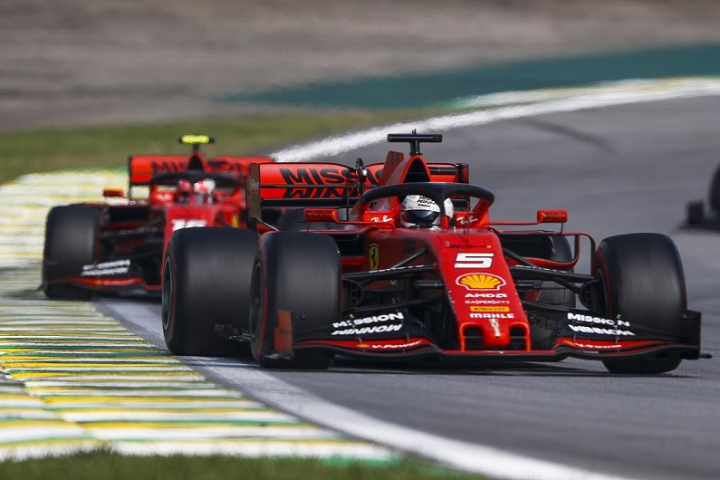
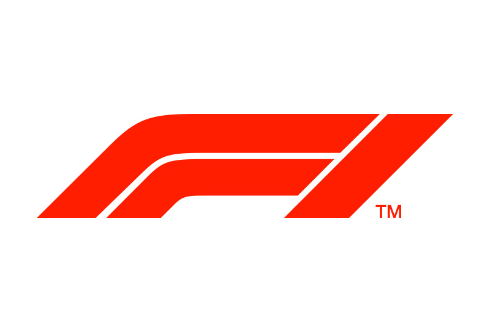
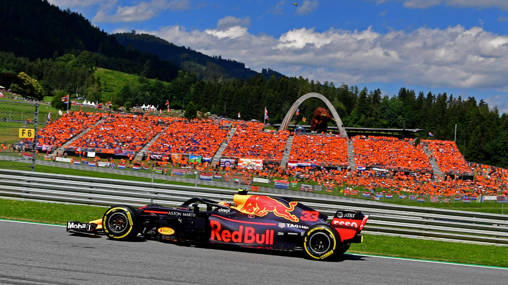

Formuła 1 (inaczej Mistrzostwa Świata Formuły 1, oficjalny skrót F1) – przeprowadzany regularnie (corocznie) od 1950 roku cykl najbardziej prestiżowych międzynarodowych wyścigów samochodowych, znany również jako wyścigi Grand Prix, a jednocześnie klasa biorących w nich udział jednomiejscowych samochodów wyścigowych o otwartym nadwoziu. Sezon 2019 Formuły 1, oficjalnie FIA Formula One World Championship 2019 – 70. sezon Mistrzostw Świata Formuły 1.
żródło
Mistrzem świata w klasyfikacji kierowców po raz szósty w karierze został Lewis Hamilton. Mistrzostwo w klasyfikacji konstruktorów szósty raz z rzędu zdobył Mercedes.
żródło

bolidy ferrari podczas wyścigu w brazyli tuż przed zderzeniem
żródło

aktualne logo F1
żródło

Max Verstappen na tle holenderskich kibiców
żródłoLewis Hamilton podczas zimowych testów w Barcelonie
żródło